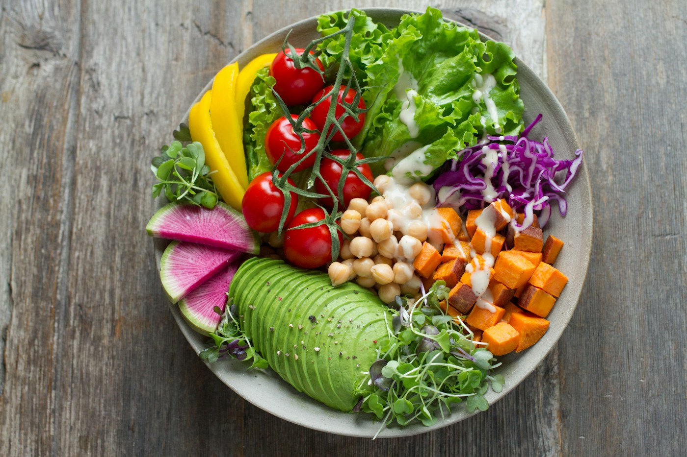
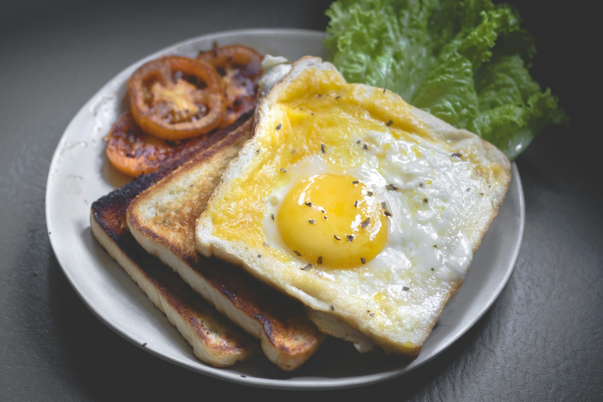

چند سؤال ساده
هدفت، سلیقهات و شرایطت را بگو.
برنامهٔ غذایی تو باید شبیه زندگی خودت باشد.
در رژیم من، هوش مصنوعی پیشنهاد میدهد و متخصص بررسی میکند؛ تا با خیال راحتتر، قدم بعدی را برداری.

هدفت، سلیقهات و شرایطت را بگو.
پیشنهادی بر اساس اطلاعاتی که وارد کردی.
متخصص برنامه را بررسی و اصلاح میکند.
وعدههایت را ببین و مسیرت را پیگیری کن.
علایق، هدف و شرایط خودت را در پرسشنامه مشخص کن؛ نقطهٔ شروع برنامه، شناخت توست.
برنامه پیش از رسیدن به دست تو بررسی میشود. اگر سؤالی داری یا تغییری میخواهی، گفتگو کن.
وعدههای انجامشده، روند وزن و مسیر هفتگیات را در یک فضای ساده و روشن دنبال کن.
هر روز بدان چه غذایی، با چه مقداری در برنامهات داری. تغییر لازم بود؟ از همانجا با متخصصت در میان بگذار.
کالری امروز تو
۱٬۲۴۰نمونهٔ نمایشی داشبورد

یک برنامهٔ غذایی، متناسب با سلیقه و زندگی تو.